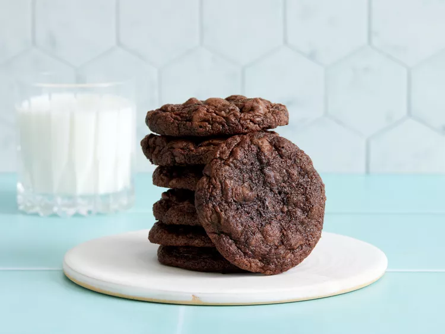

Cookies!!

Ingredients:
- 1 cup margarine, softended
- 1 cup white sugar
- 1 cup brown sugar
- 2 eggs
- 1 teaspoon vanilla extract
- 2 cups all purpose flour
- 1 teaspoon baking soda
- 1 teaspoon baking soda
- 1/3 cup unsweetened cocoa powder
- 3 cups semisweet chocolate chips
Steps:
-
Gather all ingredients. Preheat the oven to 375 degrees F (190 degrees
C). Grease cookie sheets.
-
Beat the margarine, white sugar, and brown sugar together in a medium
bowl with an electric mixer until smooth. Add eggs one at a time; stir
in vanilla.
-
Sift in the flour, baking soda, salt, and cocoa powder; mix well. Stir
in the chocolate chips until well distributed.
-
Roll tablespoonfuls of cookie dough into balls and place them 1 inch
apart onto the prepared cookie sheets.
-
Bake for 8 to 10 minutes in the preheated oven. Allow cookies to cool on
baking sheet for 2 minutes before removing to a wire rack to cool
completely.
Back to homepage